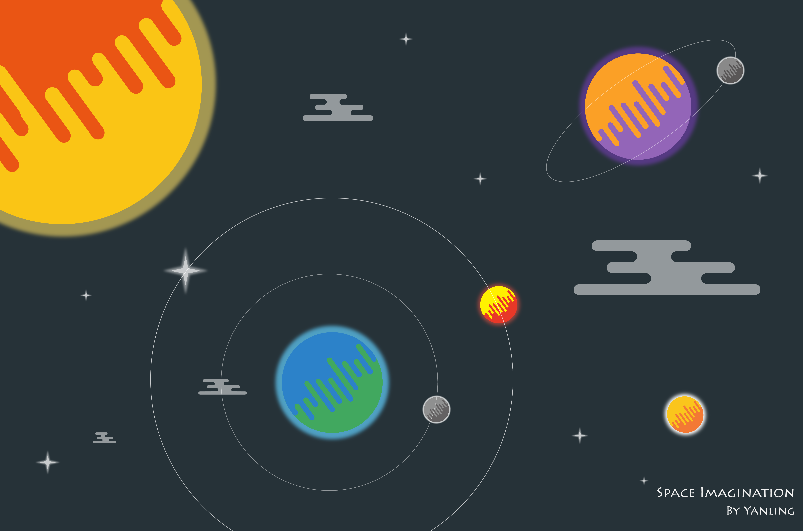
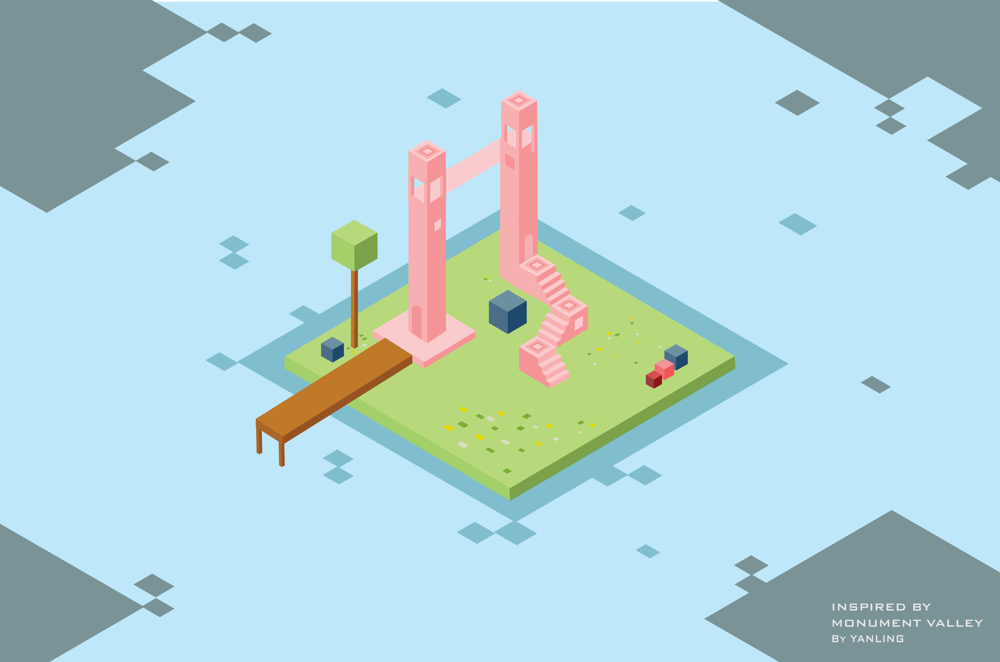

Space - Illustration
Inspired by a famous dribble piece by Designer Nina Georgieva, I tried to apply the idea of using recurring shape into my illustration. I made this illustration piece "Space" to depicit my understanding of the infinite space.
Isometric Island - Illustration
Inspired by the famous game Monument Valley, I was personally fascinated by the unique graphic design style of the game, and I recreated this piece a small island in a "Monument Valley" style.
Isometric Island - Illustration/Poster Design
Every fall semester, my local student church holds big welcoming events for new students and scholars newly coming to the University of Michigan and Ann Arbor. This past fall, I took the task to design the posters for the pre-event publicity.


Cosmos - Cover Design
I designed this album cover for my musician friend. I used photoshop to distort the image of the meteor to express the idea of cosmos. I hope to see my cover appearing on Apple Music some day. He is a talented musician and this album is great! (I have listend to it.)